벨기에 이야기 (2) - 합스부르크 제국의 노른자위
게시: 2026-07-20T06:30:37+09:00
'사울(바울)의 회개'는 대략 AD 34년 경에 벌어진 매우 인상적인 사건입니다. 전형적인 바리새인이자 유대인들의 종교 기득권 세력인 산헤드린(Sanhedrin)의 대리인인 사울이, 예수 추종자들을 체포하기 위해 시리아의 다마스커스로 가던 중 하늘에서 비춰진 강력한 빛을 맞고 쓰러졌고, 동시에 "사울아, 사울아, 네가 어찌하여 나를 박해하느냐?"라는 예수님의 목소리를 듣습니다. 이 사건을 계기로 사울은 여태까지의 태도를 180도로 전환하여, 이름을 바울로 바꾸고 예수님의 가르침을 전파합니다. 전에 뉴스위크인가 어딘가 하는 잡지사에서 세계 석학들에게 설문 조사를 하여, 인류 역사상 가장 큰 영향을 끼친 인물을 뽑은 바 있었습니다. 그떄 1위는 이슬람의 창시자 마호멧이었고, 2위가 예수, 3위가 바울이었습니다. 종교학자들은 기독교를 예수와 바울의 공동 작품이라고 일컬을 정도로 바울은 기독교 창시에 큰 영향을 주었습니다. 생각해보면 예수님도 그의 수제자인 베드로도 모두 정규 교육을 받은 적 없는 노동자 계층 출신으로서, 문서로 직접 기록을 남기지 못했습니다. 그러나 신약성서에서 권수 기준으로는 약 48%, 단어 기준으로도 약 23%를 바울이 직접 작성했으니, 바울의 영향력이 클 수밖에 없습니다. 이렇게 중요한 인물인 바울의 회개 에피소드는 워낙 유명하여, 여러 화가들이 그림으로 남겼습니다. 재미있는 것은, 대부분의 그림이 바울이 군인들과 함께 말을 타고 가다가 빛을 맞고 쓰러져 낙마하는 것으로 묘사하고 있으나, 정작 성서에는 당시 말을 탔다는 묘사가 전혀 없고, 또 역사적으로도 당시 유대인들의 생활 습관이나 관례 등으로 볼 때도 바울은 걸어서 여행 중이었을 거라는 설이 지배적입니다. 또한 그와 함께 가던 사람들도 중무장한 군인들이 아니라 유대교 제사장들의 비무장 사설 수행원들이었습니다. 당시 다마스커스는 페트라(Petra)를 수도로 하는 아랍계 나바테아(Nabatea) 왕국의 아레타스 4세(Aretas IV)가 통치하고 있던 곳으로서, 로마군조차 마음대로 갈 수 있는 곳이 아니었거든요.
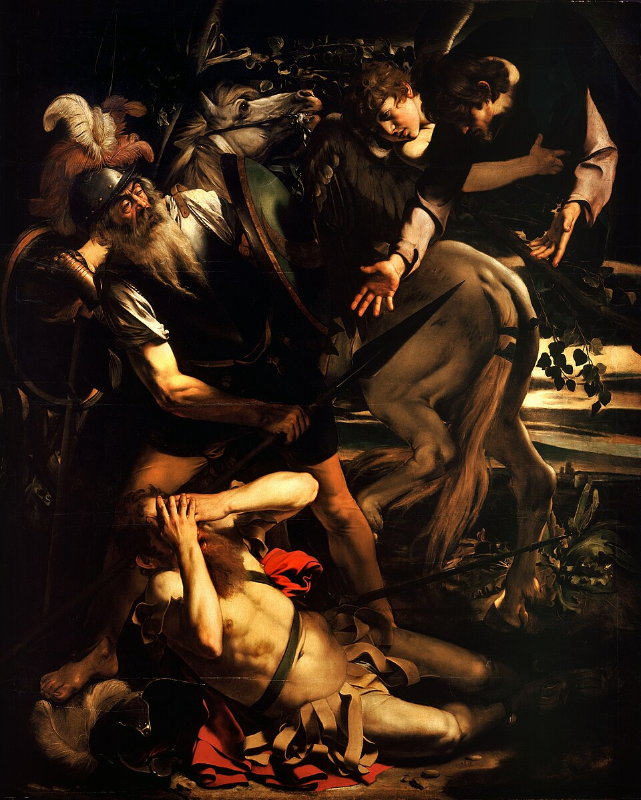
(카라바지오가 그린 사울의 회개입니다. 1600년 작품입니다.)
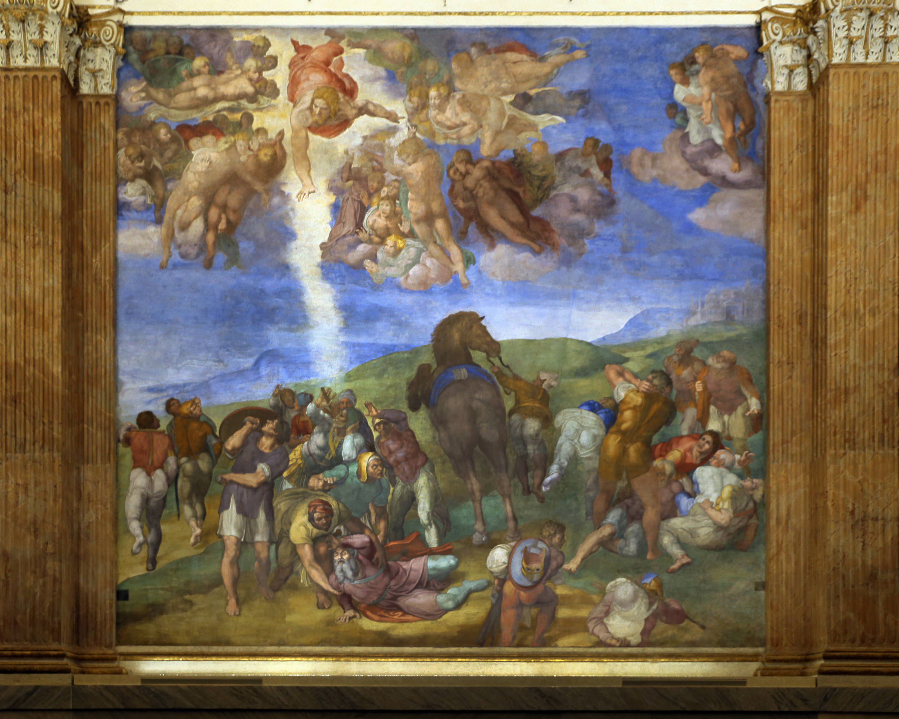
(미켈란젤로의 사울의 회개입니다. 바티칸의 파올리나 예배당에 그려진 프레스코 벽화로서, 1542년~1545년 사이에 그려졌습니다.) 이렇게 16세기 경에는 성서 이야기를 그림으로 묘사하는 화가가 매우 많았습니다. 그러니 1567년, 안트베르펜 출신의 화가인 브뤼헐(Pieter Bruegel, 보통 아들들과 구별하기 위해 the Elder로 불림)이 브뤼셀에서 사울의 회개를 그린 것은 전혀 이상한 일이 아니었습니다. 다만 브뤼헐이 그린 사울의 회개에서는 독특한 점이 있습니다. 배경이 다마스커스 인근도 아니고, 주변 사람들도 유대 제사장들의 수행원이나 로마군이 아니라 당시로서는 현대적인 스페인 테르시오(Tercio) 장창병들로 보입니다.
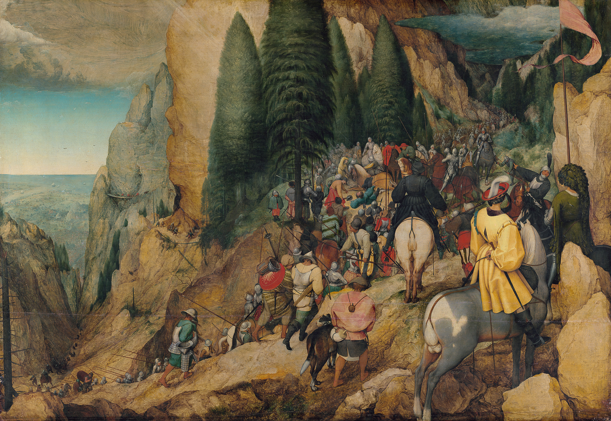
(브뤼헐의 사울의 회개입니다. 1567년작입니다. 그림 왼쪽에는 바다가 내려다 보입니다. 저건 누가 봐도 다마스커스가 아니라 알프스 산맥에서 내려다 보는 지중해입니다. 말에서 떨어지는 사울 주변에 있는 사람들의 차림새도 분명히 스페인 군인들로 보입니다.)
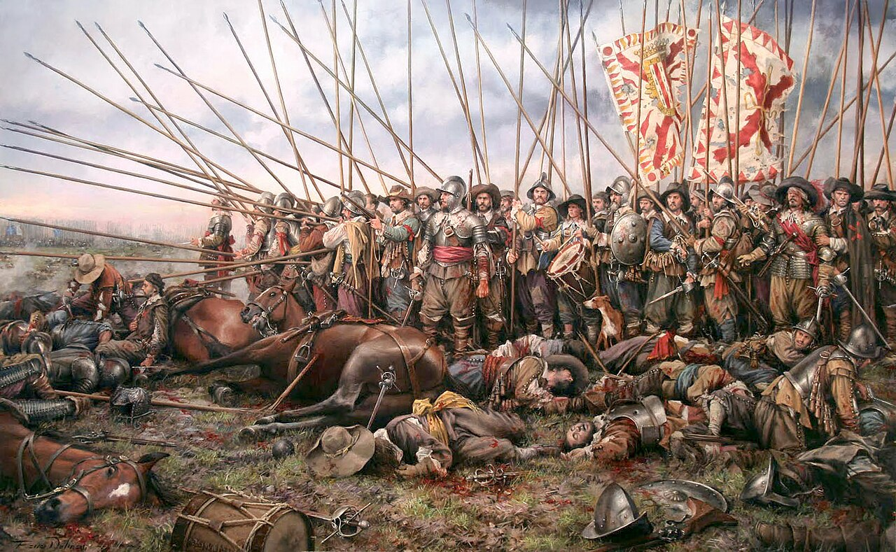
(당시 스페인 테르시오는 유럽 최강의 군대로서 위명을 날리고 있었습니다. Tercio라는 말 자체는 영어의 third에 해당하는 말인데, 왜 장창부대에 이런 이름이 붙었는지에 대해서는 몇 가지 설이 있습니다만, 가장 그럴싸한 설명은 부대의 1/3은 장창병, 1/3은 화승총병, 1/3은 방패와 검으로 무장한 보병으로 구성되었기 때문이라는 것입니다. 나중에는 방패와 검을 갖춘 보병이 점점 사라지게 되었고, 윗 그림에 표현된 1643년 로크롸(Rocroi) 전투에서는 장창과 화승총으로만 무장했었습니다. 저 로크롸 전투에서 기동성 있는 보-기-포병 합동 전술을 사용한 그랑 콩데(le Grand Condé)의 프랑스군에게 테르시오가 패배하면서 테르시오 전성시대가 끝나게 됩니다.) 대체 브뤼헐은 저 성서 이야기 그림에 왜 전혀 엉뚱한 배경의 알프스 산맥과 스페인 장창부대를 그린 것일까요? 이는 명백히 스페인 가도(Spanish Road, Camino Español)를 그린 것인데, 스페인 가도 자체가 네덜란드 독립전쟁과 직접적으로 연계되어 있습니다. 그러니 브뤼헐은 당시 자신의 조국이 처한 현실을 그림에 투영했다고 볼 수 있습니다. 이야기는 자연스럽게 스페인 가도와 네덜란드 독립전쟁으로 이어집니다. 지난 편에서 말씀드린 것처럼, 현재의 네덜란드-벨기에 지역은 원래 플랑드르, 브라반트, 젤란트, 홀란트 등의 작은 공작령 백작령 등으로 쪼개져 있었습니다. 그러나 14~15세기에 걸쳐 부르고뉴(Bourgogne) 공국이 결혼 등을 통해 점진적으로 저지대의 작은 영지들을 합병했습니다. 그러다 1477년 부르고뉴의 마지막 공작 용담공 샤를이 낭시 전투에서 아들 없이 전사하면서 상황이 급변합니다. 프랑스 왕이 후손이 없다는 이유로 부르고뉴 본토를 회수하자, 샤를의 외동딸 마리가 저지대 영토라도 지키기 위해 신성로마제국 합스부르크의 막시밀리안 1세와 결혼한 것입니다. 그 결과, 저지대는 통째로 합스부르크 가문의 영지가 됩니다. 후에 합스부르크가 스페인 왕위를 차지하면서 저지대는 스페인 합스부르크의 통치를 받게 됩니다.
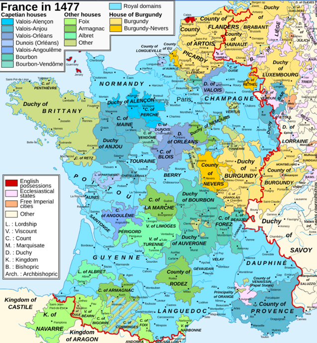
(프랑스라는 나라가 얼마나 복잡했는지를 보여주는 1477년 프랑스의 지도입니다. 저기서 노란색과 오렌지색으로 표시된 것이 부르고뉴 공작령 및 백작령 영토로서, 오늘날 네덜란드-벨기에가 부르고뉴 가문 소속으로 되어 있는 것을 보실 수 있습니다.) 합스부르크와 저지대 사람들과의 관계는 처음에는 그리 나쁘지 않았습니다. 16세기 초반 스페인 국왕을 겸임했던 신성로마제국 황제 카알 5세(스페인식으로는 카를로스 5세)는 아예 플랑드르의 헨트(Ghent)에서 태어났으며, 플랑드르 귀족들의 언어인 프랑스어 외에도 플랑드르 서민들처럼 플라망어도 배워서 스스로를 플랑드르인이라고 생각했으며, 훗날 독립전쟁을 이끄는 오라녜 공 빌럼 등 저지대의 귀족들과 가깝게 지냈습니다. 게다가 저지대는 세금 측면에서도 합스부르크의 알짜배기 영토였습니다. 저지대는 당시 유럽에서 도시화가 가장 진전되고 상업·무역(청어, 직물, 금융)이 발달한 곳이었습니다. 저지대 17개 주가 바치는 세금은 스페인이 아직 은광 개발이 덜 된 아메리카 대륙에서 약탈해 온 금은보다 7배나 많았을 정도였습니다. 그래서 카를로스 5세는 14세기 청어의 염장법을 개발하여 청어의 대량 보존 및 수출에 크게 이바지한 뵈켈손(Willem Beuckelszoon)이라는 어부의 무덤을 직접 찾아가 참배하고 경의를 표할 정도였습니다.
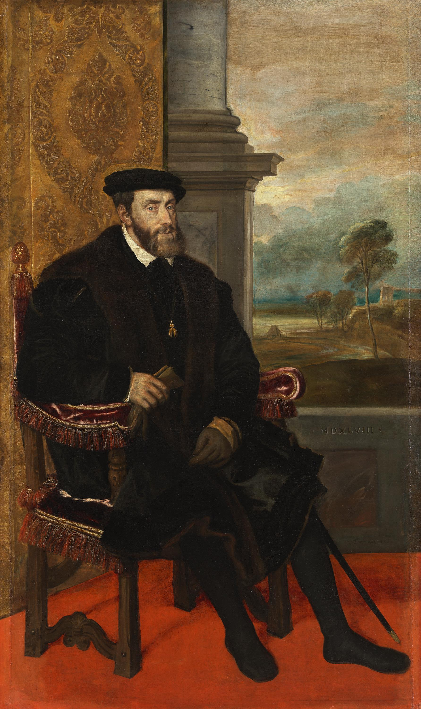
(카를로스 5세입니다. 합스부르크는 혼인 관계를 통해 영토를 계속 확장시켰는데, 1516년 카를로스 5세는 어머니의 권리를 주장하며 스페인 국왕 자리도 겸하게 되면서 유럽에서의 합스부르크 영토를 최대 판도로 확장시켰습니다. 그의 어머니 '광녀' 후아나(Juana la Loca)는 1492년 스페인 최후의 이슬람 왕국인 그라다나를 정복하고 레콩키스타를 완성했던 아라곤의 페르디난드 2세와 카스티야의 이사벨라 여왕의 딸이었습니다.)
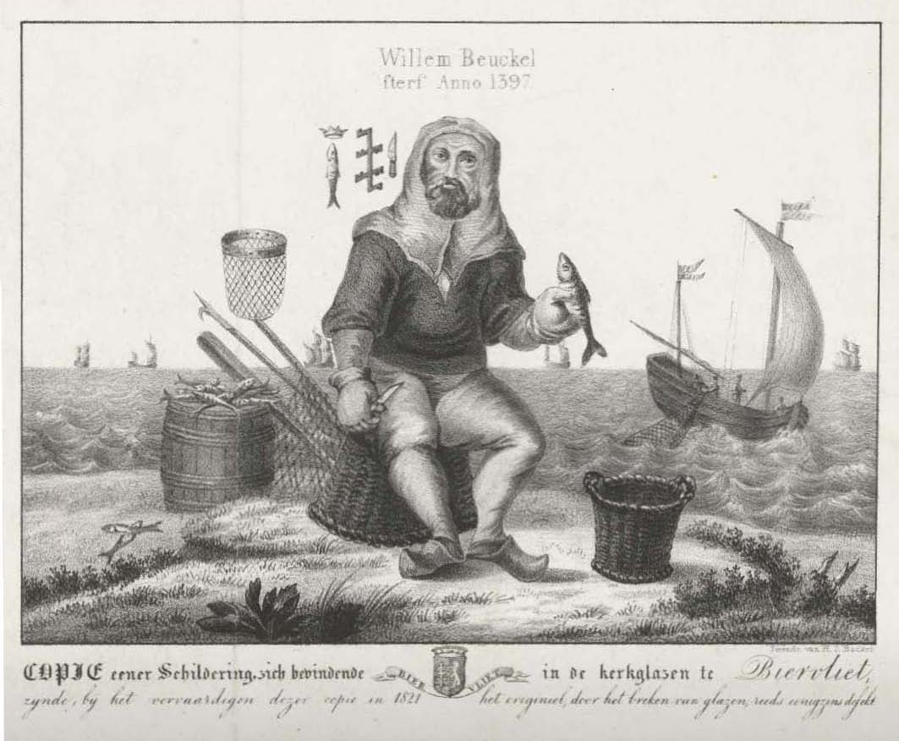
(청어를 손질하는 어부 뵈켈손의 모습을 묘사한 1821년 석판화입니다. 당시 청어는 북해와 대서양에서 매우 많이 잡히는 생선이었지만 기름기가 많아서 보존하기가 어려웠으므로 내륙으로의 수송 및 판매가 어려웠습니다. 그걸 해낸 것이 뵈켈손이 개발한 기빙(gibbing)이라는 손질법입니다. 이 방법의 핵심은 청어의 간과 쓸개는 남겨둔 채 아가미와 내장을 제거한 뒤, 1대20의 비율로 소금과 물을 섞은 간수에 손질한 청어를 보관하는 것입니다.)
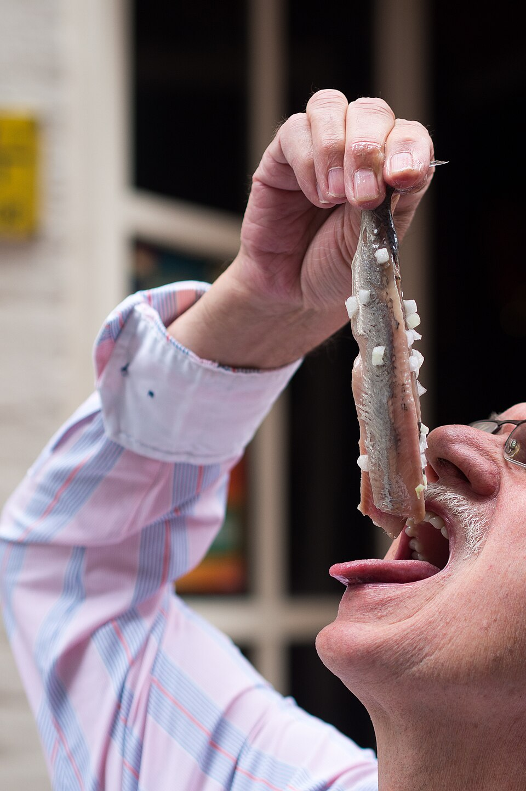
(염장 청어는 가난하던 유럽인들에게 단백질을 공급해준 소중한 식품이었습니다. 저렇게 먹는 것이 제대로 된 네덜란드식 염장 청어 먹는 방법이라고 합니다.)
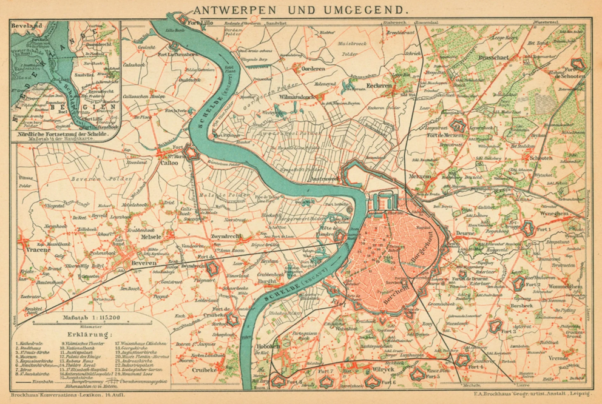
(염장 청어로 큰 돈을 번 도시는 암스테르담이지만, 그런 암스테르담도 더 남쪽에 있는 안트베르펜(Antwerpen, 영어로는 앤트워프 Antwerp, 불어로는 앙베르 Anvers)의 부와 비교할 수는 없었습니다. 원래 15세기 중반까지는 저지대에서 가장 번영하는 항구는 브뤼허(Brugge)였습니다, 그러나 15세기 후반부터 브뤼허와 바다를 연결하던 즈윈(Zwin)강 통로에 모래와 흙이 쌓여 수심이 얕아지면서 대형 무역선들이 더 이상 진입할 수 없게 되었습니다. 반면 안트베르펜은 스헬더(Scheldt)강 깊숙한 안쪽에 있으면서도 수심이 깊고 넓어 대형 선박이 안전하게 정박할 수 있었고, 배후의 내륙 시장으로 연결되는 수로망도 훨씬 뛰어났습니다. 결국 브뤼허에 머물던 외국 상인들과 금융가들이 대거 안트베르펜으로 둥지를 옮겼습니다. 게다가, 1498년 바스코 다 가마의 희망봉 개척으로 후추와 육두구 등의 엄청난 동양 향신료를 들여오게 된 포르투갈이 1499년 안트베르펜을 북유럽 물류 항구로 지정하면서 안트베르펜은 유럽 최대이자 최고로 번영하는 항구가 되었습니다. 그러나 그 번영은 100년을 넘기지 못했는데, 그 이유는 다음 편에서 다루게 될 것입니다.) 그러나 저 멀리 독일에서 1517년 마르틴 루터의 종교 개혁이 시작되면서 이야기가 달라졌습니다. 정확히 말하자면, 그보다는 프랑스의 종교 개혁 박해를 피해 스위스로 망명해있던 칼뱅(Jean Calvin)이 1536년 기독교 강요(Institutio Christianae Religionis)를 출간하면서 저지대의 운명이 크게 바뀌었습니다. 1540년대에 저지대 남부, 그러니까 현재의 벨기에 지역부터 칼뱅주의가 급격히 침투하기 시작했습니다. 칼뱅주의의 특성 중 하나가 적극적 직업 활동에 따른 부의 축적과 상업 활동을 장려했다는 점입니다. 가령 돈을 빌려주고 이자를 받는 것은 원래 기독교에서는 죄악시되어 유태인들에게나 허락되는 천한 일이었는데, 칼뱅은 신학자들 중에서는 거의 처음으로, 그런 금융업을 긍정적으로 보았습니다. 그런 점이 상공업이 발달한 저지대에게 매우 매력적으로 다가왔습니다. 특히 독일 영주들의 보호를 받던 루터가 세속 군주들에 대한 순종을 강조한 반면, 스위스 제네바에서 활동한 칼뱅은 세속 권력이 폭정을 저지를 때 '하급 판관'을 통한 저항권을 인정했다는 점에서 저지대 사람들의 마음에 쏙 들었던 것입니다. 저지대에 대해 호의적이었던 카를로스 5세도 신교 탄압에는 매우 열성적이었습니다. 그는 스페인과 저지대, 이탈리아뿐만 아니라 오스트리아와 보헤미아, 헝가리를 포함한 신성로마제국, 그리고 아메리카 대륙까지 통치하는 대제국의 황제였는데, 이미 개신교가 어느 정도 자리를 잡은 독일 지방에서는 타협점을 찾기도 했지만 저지대에 침투하는 신교 세력에 대해서는 무자비한 탄압을 가했습니다. 그러면서도 오스만 투르크와의 전쟁, 독일 지역에서의 신교 세력과의 종교 전쟁, 프랑스 발로아 왕가와의 전쟁 등은 계속 되었으므로 합스부르크 제국의 재정적인 어려움은 계속 심해졌습니다. 결국 지쳐버린 카를로스 5세는 제국을 양분하여, 신성로마제국이라는 타이틀과 오스트리아, 보헤미아, 헝가리 등은 자신의 동생인 페르디난트 1세에게 물려주었고, 알짜배기 영토인 스페인과 이탈리아, 저지대 및 아메리카 대륙은 아들 펠리페 2세에게 물려준 뒤 퇴위해버렸습니다. 이렇게 합스부르크 제국이 스페인과 오스트리아 양쪽으로 나누어진 것은 나름대로 큰 의미가 있겠습니다만, 저지대에 대해서는 치명적인 결과를 낳습니다. 펠리페 2세는 카를로스 5세와는 비교가 안 될 정도로 저지대 사람들에게 냉혹한 탄압을 가했기 때문이었습니다.
(분량 조절 대실패로 벨기에에 대해서는 두 번 정도 더 연재할 것 같습니다)
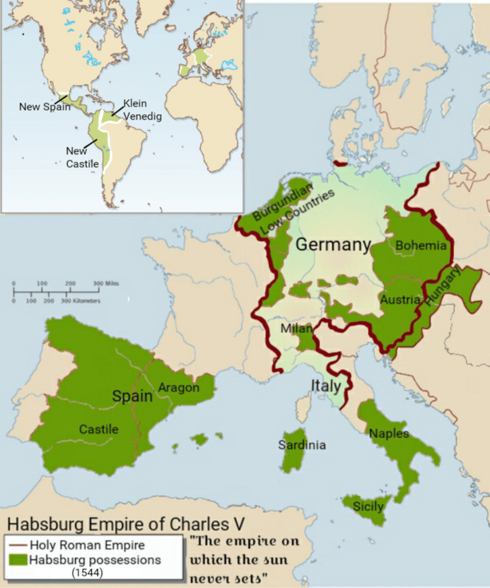
(카를로스 5세의 영토입니다. 물론 신성로마제국이 다 합스부르크 소유인 것은 결코 아니었습니다.)
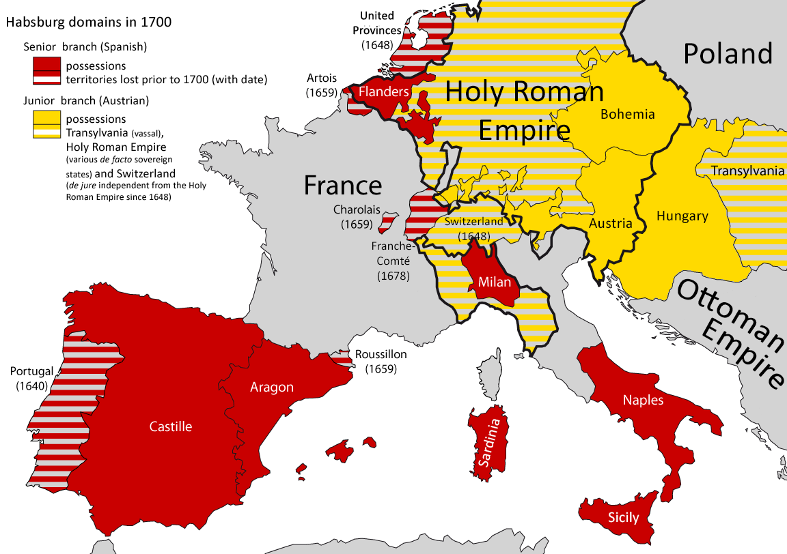